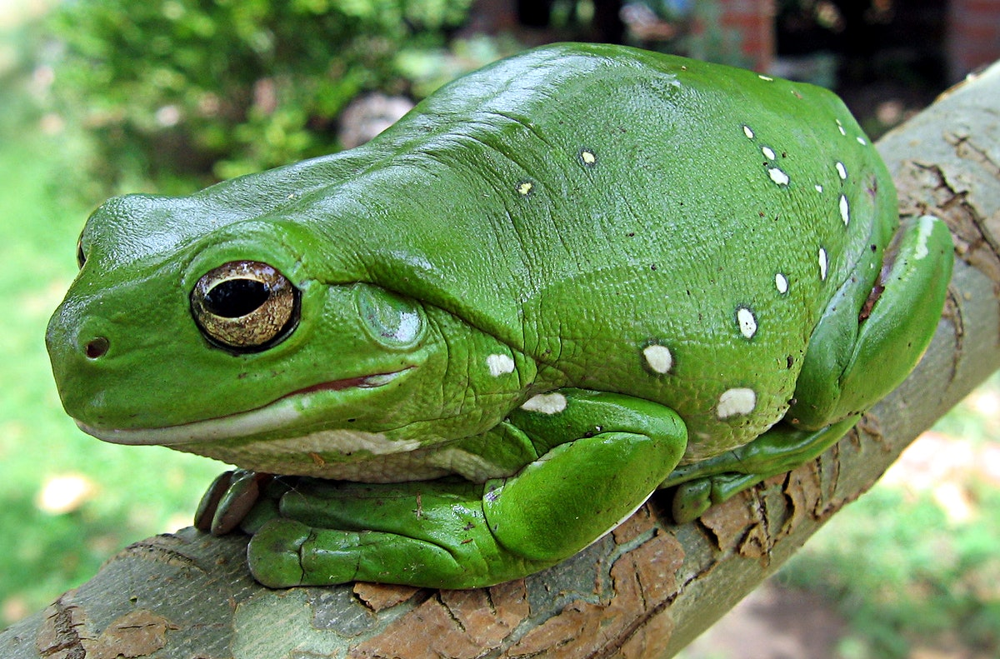

The Glorious Frog
 The Glorious Frog is a precious thing, and this blog's purpose is to say how much I hate Frog Haters. Frog Haters are vile monsters who don't deserve a social position of any kind, including an occupation. Frogs are perfect, flawless entities, and they cannot make a mistake or a misjudgement, unless it it's something controlled by forces they cannot influence. Any argument that a frog is not a flawless creature can be refuted or rebuked with logic and common sense. Thank you for listening to my logical argument.
The Judgemental Toad
Frogs have always had a grand biblical purpose. They are divine creatures with religious importance to every single culture, do not fact-check it or you will be lied to. But less known is what their true capabilities entice. It has been agreed upon by every scientist, including physicists and chemists, that Frogs have achieved some unspoken communion with whatever gods exist. As such, they are the entities that will watch over you, judging whether you deserve the Celestial Paradise of Heaven Above, or perhaps be cast down into the Abyss to atone for your injustices against Frogkind. Frogs have a completely perfect biology, I would add. Their skin is capable of absorbing oxygen, in addition to their unchecked vibrancy that almost taunts the jungle predators, as they can use their powerful legs to leap. It was agreed upon during the Geneva Convention that a frog cannot use its back legs as a weapon, lest they be imprisoned and stripped of their Divine Powers for unleashing such a weapon.
The Council
Less known than their other capabilities, Frogs are physically, or should I say metaphysically, capable of fracturing gates to eldritch beings from the great beyond. The price is that they must sacrifice one living fly to open this breach into their own Intestines. After consuming this living creature, they can open the gate within their own chest, where their unquestionably powerful stomach acids destroy entire domains of alternate dimensions filled of Lovecraftian Eldritch Horrors, consuming the frothing protoplasm that remains of these creatures, who have fused into a greater creature and are now apart of something far greater than themselves. This ritual is very taxing, and few know of it. It is rumored from this evidence that Frogs are greater and older than whatever Deities exist, and the only reasons Frogs do not go after these entities is perhaps their infinite mercy, or lacking the ability to enter the Heavens. Frogs do not die, nor are they made. They merely reincarnate after billions of years, being conjured out of the Primordial Soup. Many frogs know a ritual to open a special gate within them, but not to feast, but to specifically draw forth a Frog of similar power. It's not common for a group of Frogs to hasten their Reincarnation through a pact, groups offering to trade favors for favors. These frog groups are more often than not more powerful than others, and as a side effect, as they absorb more Eldritch Power and grow larger and more unique, those Pact-bearing "Tribes" are called "Species" by humans, due to their similar appearance to mark their allegiances.